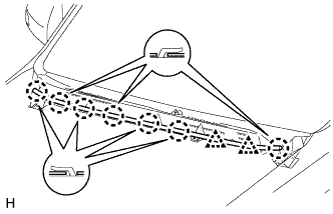
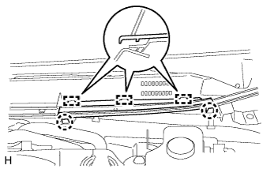
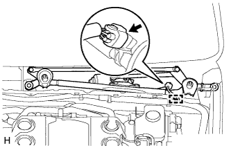
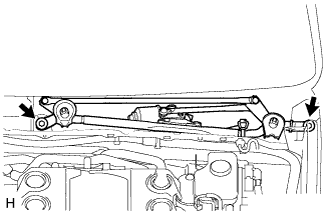
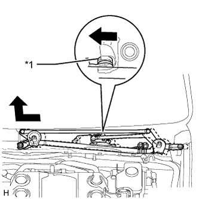
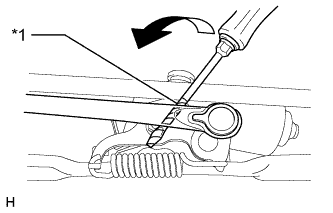
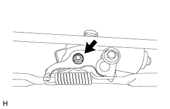
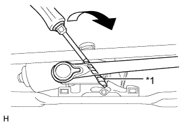
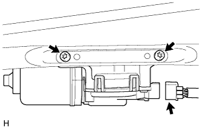
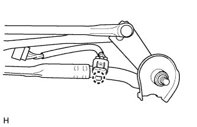

ЭЛЕКТРОДВИГАТЕЛЬ ПЕРЕДНЕГО СТЕКЛООЧИСТИТЕЛЯ > СНЯТИЕ |
| 1. ОТСОЕДИНИТЕ ПРОВОД ОТ ОТРИЦАТЕЛЬНОГО ВЫВОДА АККУМУЛЯТОРНОЙ БАТАРЕИ |
| 2. СНИМИТЕ ВЕРХНЕЕ УПЛОТНЕНИЕ КРОНШТЕЙНА РАДИАТОРА |
Освободите 13 фиксаторов и снимите верхнее уплотнение кронштейна радиатора.
| 3. СНИМИТЕ ЗАЩИТУ БОКОВОЙ ПАНЕЛИ ЛЕВОГО ПЕРЕДНЕГО КРЫЛА |
 |
Освободите 3 фиксатора и направляющую и снимите защиту боковой панели переднего крыла.
| 4. СНИМИТЕ ЗАЩИТУ БОКОВОЙ ПАНЕЛИ ПРАВОГО ПЕРЕДНЕГО КРЫЛА |
| 5. СНИМИТЕ ПРОКЛАДКУ МЕЖДУ ЛЕВЫМ ПЕРЕДНИМ КРЫЛОМ И КОЖУХОМ |
 |
Освободите 5 захватов и снимите уплотнение между левым передним крылом и кожухом.
| 6. СНИМИТЕ ПРОКЛАДКУ МЕЖДУ ПРАВЫМ ПЕРЕДНИМ КРЫЛОМ И КОЖУХОМ |
| 7. СНИМИТЕ НАКЛАДКУ РЫЧАГА СТЕКЛООЧИСТИТЕЛЯ ВЕТРОВОГО СТЕКЛА |
 |
С помощью отвертки расцепите 3 захвата и снимите накладку рычага стеклоочистителя.
| *1 | Защитная клейкая лента |
| 8. СНИМИТЕ РЫЧАГ ЛЕВОГО ПЕРЕДНЕГО СТЕКЛООЧИСТИТЕЛЯ СО ЩЕТКОЙ В СБОРЕ |
 |
Отверните гайку и снимите рычаг левого переднего стеклоочистителя со щеткой в сборе.
| 9. СНИМИТЕ РЫЧАГ ПРАВОГО ПЕРЕДНЕГО СТЕКЛООЧИСТИТЕЛЯ СО ЩЕТКОЙ В СБОРЕ |
 |
Отверните гайку и снимите рычаг правого переднего стеклоочистителя со щеткой в сборе.
| 10. СНИМИТЕ ВЕРХНЕЕ УПЛОТНЕНИЕ МЕЖДУ КАПОТОМ И КОЖУХОМ |
|  |
Освободите 7 захватов и 2 фиксатора и снимите верхнее уплотнение между капотом и кожухом.
| 11. СНИМИТЕ ЦЕНТРАЛЬНУЮ ВЕНТИЛЯЦИОННУЮ РЕШЕТКУ В ВЕРХНЕЙ ЧАСТИ КОЖУХА № 2 |
|  |
Освободите 2 захвата и 3 направляющих и снимите центральную вентиляционную решетку в верхней части кожуха № 2.
| 12. СНИМИТЕ ВЕНТИЛЯЦИОННУЮ РЕШЕТКУ В ВЕРХНЕЙ ЧАСТИ КОЖУХА В СБОРЕ |
 |
Снимите 2 фиксатора.
Расцепите 6 захватов и направляющую (A).
| *1 | Направляющая A |
| *2 | Направляющая B |
Освободите 10 направляющих (B) и вытяните вентиляционную решетку в верхней части кожуха в сборе.
| 13. СНИМИТЕ ЭЛЕКТРОДВИГАТЕЛЬ И ТЯГУ СТЕКЛООЧИСТИТЕЛЯ ВЕТРОВОГО СТЕКЛА |
|  |
Расцепите зажим и отсоедините разъем.
|  |
Выверните 2 болта.
|  |
Отсоедините уплотнительную втулку и снимите электродвигатель стеклоочистителя ветрового стекла с тягой, как показано на рисунке.
| *1 | Уплотнительная шайба |
| 14. СНИМИТЕ КРИВОШИПНЫЙ РЫЧАГ ПЕРЕДНЕГО СТЕКЛООЧИСТИТЕЛЯ В СБОРЕ (для моделей с правосторонним рулевым управлением, с пружиной) |
|  |
С помощью отвертки отделите тягу стеклоочистителя ветрового стекла от оси кривошипа кривошипного рычага переднего стеклоочистителя в сборе, как показано на рисунке.
| *1 | Защитная клейкая лента |
|  |
Отверните гайку и снимите кривошипный рычаг переднего стеклоочистителя в сборе.
| 15. СНИМИТЕ ЭЛЕКТРОДВИГАТЕЛЬ СТЕКЛООЧИСТИТЕЛЯ ВЕТРОВОГО СТЕКЛА В СБОРЕ |
Без пружины:
|  |
С помощью отвертки отделите тягу стеклоочистителя ветрового стекла от оси кривошипа кривошипного рычага переднего стеклоочистителя, как показано на рисунке.
| *1 | Защитная клейкая лента |
|  |
Отсоедините разъем.
С помощью торцевого ключа "TORX" T30 выверните 2 болта и снимите электродвигатель стеклоочистителя ветрового стекла.
| 16. СНИМИТЕ ПРОВОД ЭЛЕКТРОДВИГАТЕЛЯ СТЕКЛООЧИСТИТЕЛЯ |
|  |
Освободите захват и снимите провод электродвигателя стеклоочистителя.